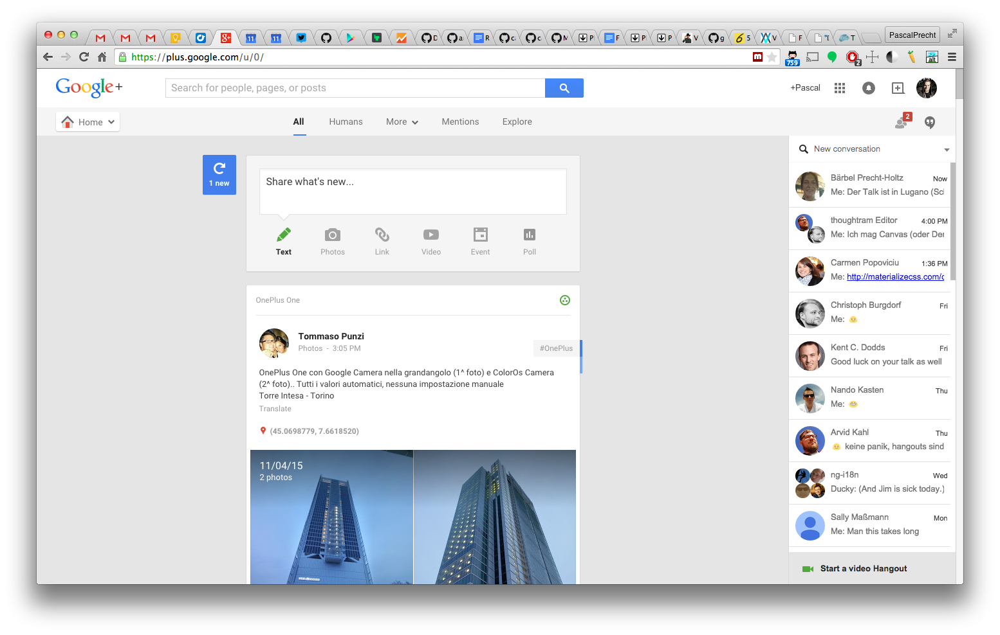

Fireside chats about Angular 2
By Carmen Popoviciu and Pascal Precht a.k.a ng-duo
{kind=link}

Angular 2 reactions...
Here's what we build today
Warning!
Everything in this talk is based on alpha developer previews. Things might change in the future.
(Do not try this in production!)
Angular 2 built on standards
- ECMAScript 6/TypeScript
- Web Components (Shadow DOM, Template)
- DOM
ES6
(Some features we need to understand first.)
Classes
ES6 classes are syntactical sugar over objects and prototypes.
class Car {
constructor(name) {
this.name = name;
this.milesDriven = 0;
}
drive(miles) {
this.milesDriven = this.milesDriven + miles;
}
}
let bmw = new Car('BMW');
bmw.drive(10);
Classes
We can inherit from classes using extends keyword
class Convertible extends Car {
}
let mercedes = new Convertible('Mercedes');
mercedes.drive(20);Modules
A module format that everybody is happy with
(AMD, CommonJS - I'm looking at you!).
// ----- lib.js
export function square(x) {
return x * x;
}
// ----- app.js
import square from 'lib';
square(5); // 25
Modules
We can export classes too!
// ----- Car.js
export class Car {
constructor(name) {
this.name = name;
this.milesDriven = 0;
}
drive(miles) {
this.milesDriven = this.milesDriven + miles;
}
}
export class Convertible extends Car { ... }
Modules
We can export classes too!
// ----- app.js
import { Car, Convertible } from 'Car'
let bmw = new Car('BMW');
let mercedes = new Convertible('Mercedes');
Let's build that app!
import {
bootstrap,
Component,
View
} from 'angular2/angular2'
@Component({
selector: 'fireside-chats-app'
})
@View({
template: '{{name}}
'
})
class FiresideChatsApp {
constructor() {
this.name = 'Fireside Chats';
}
}
Annotations + Decorators
Annotations
Annotations are a declarative way of attaching metadata to code.
@Annotation
class SomeClass {
...
}AtScript/Traceur output
var SomeClass = (function() {
function SomeClass() {}
return SomeClass;
});
Object.defineProperty(SomeClass, 'annotations', {
get: function () {
return [new Annotation()];
}
});
So what are decorators then?
Decorators
Decorators look pretty much the same but are more general and can be implemented by the consumer.
@Annotation
class SomeClass {
...
}function Annotation() {
return function (target) {
target.annotations = [...]
};
}import {
bootstrap,
Component,
View
} from 'angular2/angular2'
@Component({
selector: 'fireside-chats-app'
})
@View({
template: '{{name}}
'
})
class FiresideChatsApp {
this.name = 'Fireside Chats';
}
Bootstrapping an app
We can bootstrap our application with a component as entry point.
bootstrap(FiresideChatsApp);<body>
...
Demo
Template Syntax
Property Binding
DOM elements have attributes and properties.

var input = document.querySelector('input');
input.value; // 'Carmen'
var img = document.querySelector('img');
img.src = // 'path/to/img.png'
input.value = 'Pascal';
input.getAttribute('value'); // 'Carmen'
Property Binding
Angular 2 binds to element properties instead of attributes in order to work with any element.
Using [] syntax, we can bind to element properties.
A binding value is always an expression.
My editor doesn't like it!
Canonical Syntax
Angular 2 supports a canoncial version of the property binding syntax to prevent possible problems with editors and server-side preprocessors.
bind-* is equivalent to [*]
String Interpolation
String interpolation syntax is also just a shorthand.
Hello {{name}}Is equivalent to:
Binding Events
Angular 2 treats event bindings as core construct, hence no need to create event directives.
@Component(...)
class SomeComponent {
submit() {
// do something
}
}Canonical Syntax
Angular 2 supports a canonical version of the event binding syntax to prevent possible problems with editors and server-side preprocessors.
on-* is equivalent to (*)
Viewport Directives
Viewport is a directive which can control instantiation of child views which are then inserted into the DOM.
<ul>
{{item.name}}
</ul>
This is an error message.
Can only be placed on <template> elements.
Wait... Template?
Inline Templates (implicit)
Angular 2 uses inline templates to enable declarative DOM structure changes. Templates can be used implicit or explicit.
Hello {{user}}!
... administrator menu ...
Inline Templates (explicit)
Explicit templates allow us to have more than one root DOM node.
Hello {{user}}!
... administrator menu ...